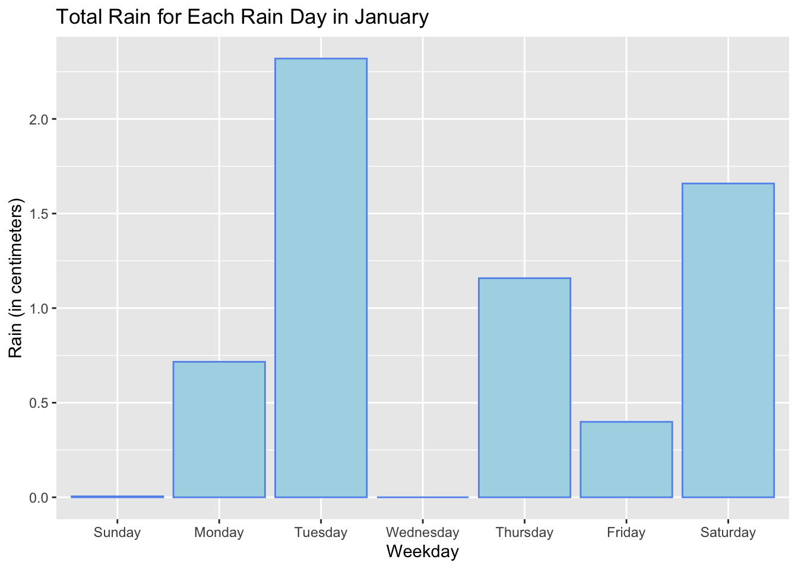
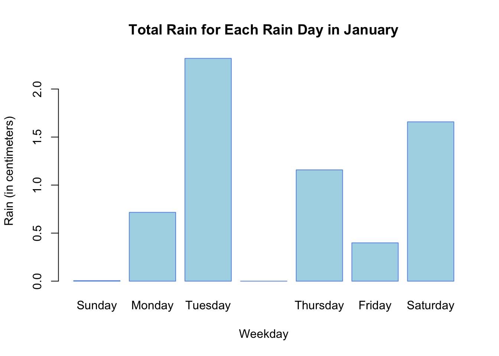
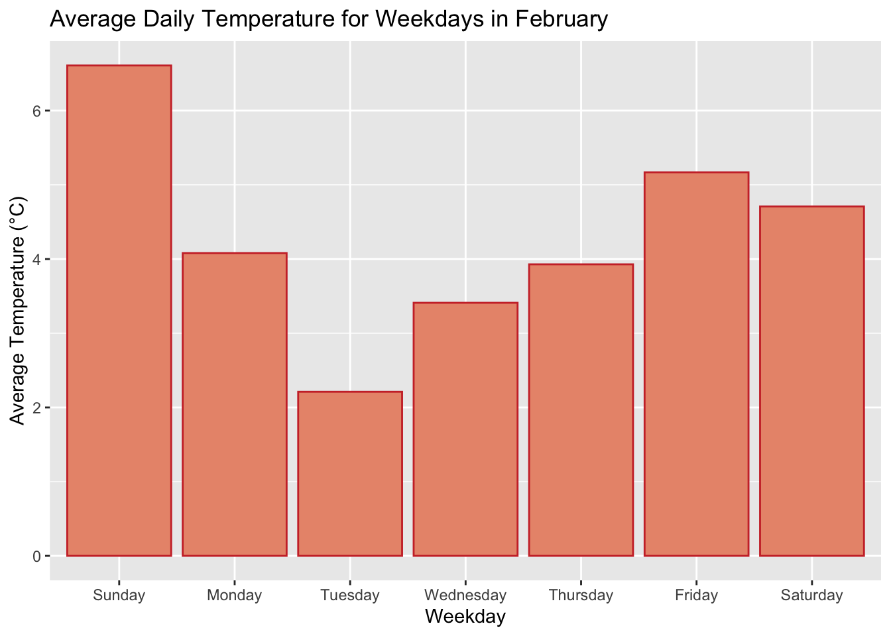
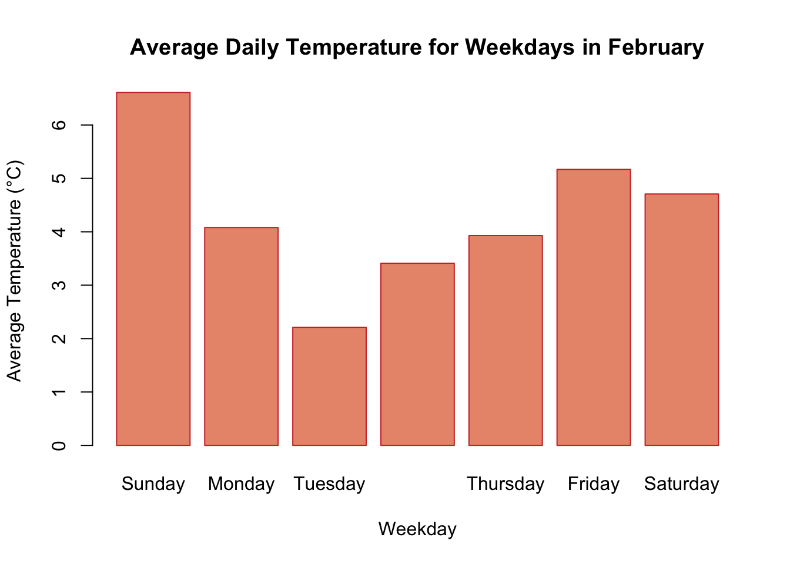
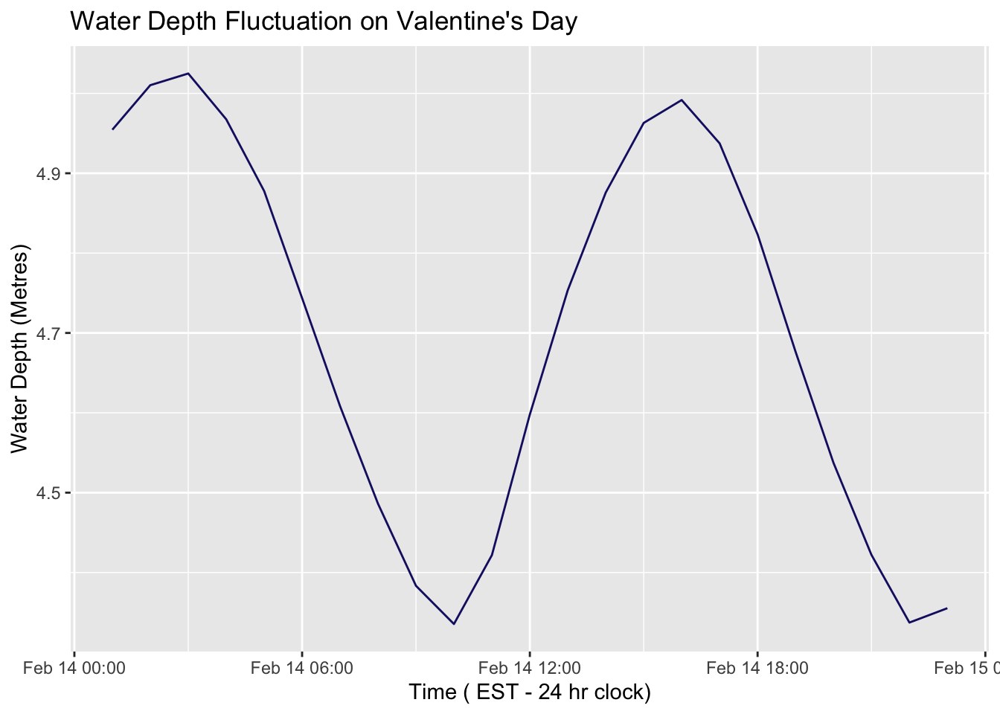
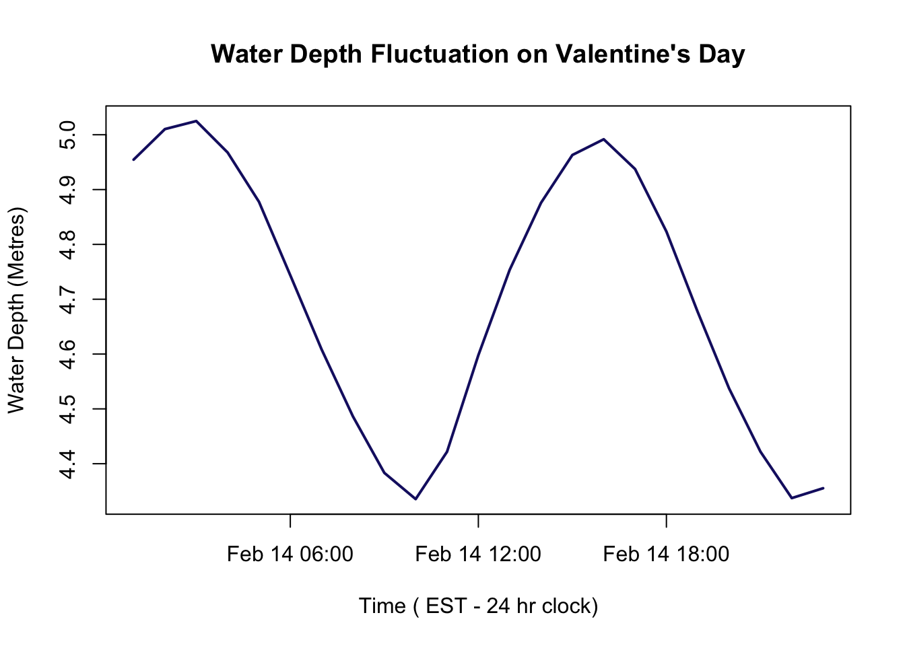
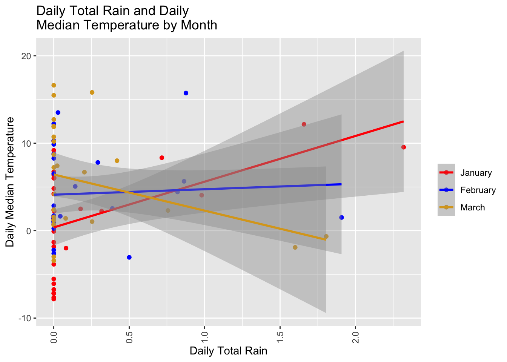
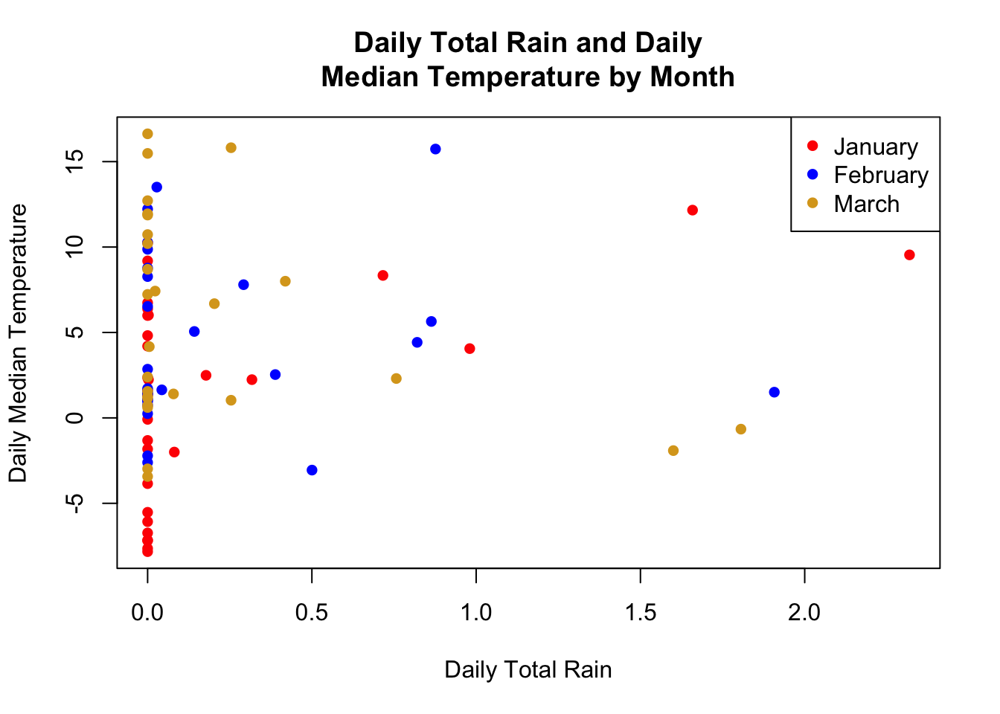
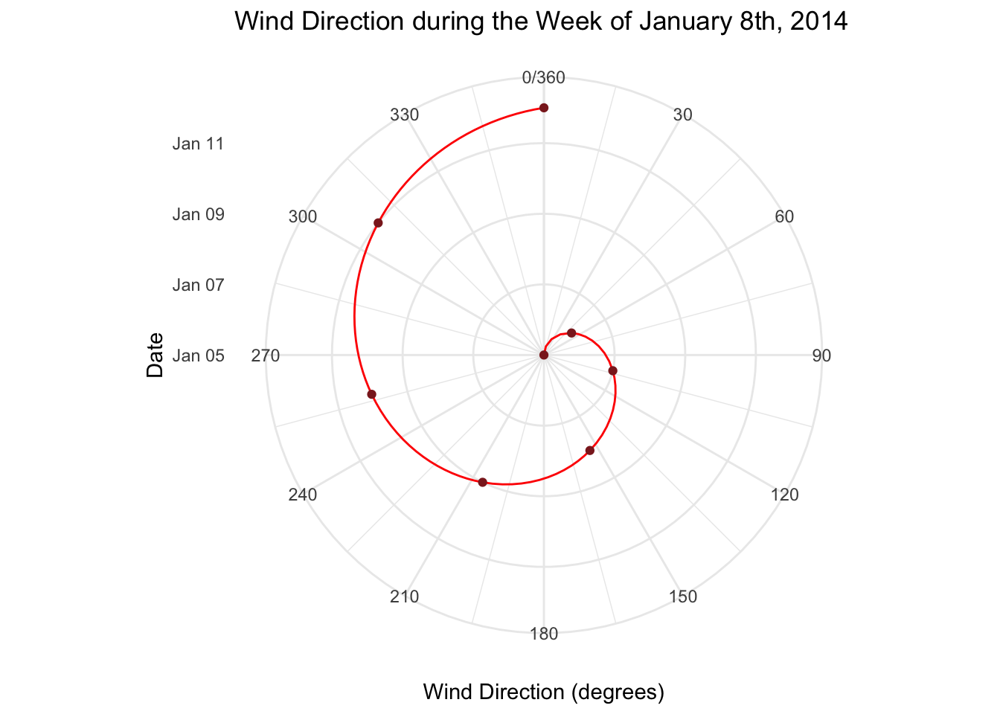
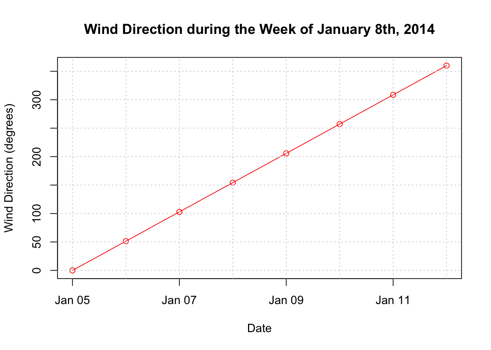

#Basic Function Formula
getRiceData <- function() {
}
#Read in packages
library(lubridate)
library(tidyverse)
library(knitr)
library(kableExtra)
library(dplyr)
library(ggplot2)
library(gridExtra)
library(openair)
url <- "https://docs.google.com/spreadsheets/d/1Mk1YGH9LqjF7drJE-td1G_JkdADOU0eMlrP01WFBT8s/pub?gid=0&single=true&output=csv"
read_csv(url) -> riceIn Class Functions Section
Step 1 : Reading in Data and Packages
Step 2 : Manipulating the Data
## (1) Make Date Object
rice$DateTime <- as.POSIXct(rice$DateTime, format= "%m/%d/%Y %I:%M:%S %p") #???
# (2) Create Month, Day, and Weekday Objects
rice <- rice %>%
mutate(Month = factor(month(DateTime),
levels = 1:12, labels = sprintf("%02d", 1:12), ordered = TRUE),
Day = day(DateTime),
Weekday = factor(weekdays(DateTime),
levels = c("Sunday",
"Monday",
"Tuesday",
"Wednesday",
"Thursday",
"Friday",
"Saturday"),
ordered = TRUE)
)
# (3) Convert Fahrenheit to Celsius and inches to centimeters
rice <- rice %>%
mutate(
AirTempC = (AirTempF - 32) * 5/9,
Rain_cm = Rain_in * 2.54
)
# (4) Remove unnecessary columns
rice <- rice %>%
select(-RecordID,
-WindSpeed_mph,
-RelHumidity,
-AirTempF,
-PH_mv,
-Rain_in,
-Depth_ft)
# (5) Reorder the Columns
rice <- rice %>% select(DateTime,
Month,
Day,
Weekday,
everything())Graphics
Step 3 : Graphics Homework (Have one R plot and one ggplot for each prompt)
# Total Rain for Each Weekday in January.
filtered_rice_week_month_jan <- rice %>%
filter(Month == "01" & Weekday %in% c("Sunday", "Monday", "Tuesday", "Wednesday", "Thursday", "Friday", "Saturday"))
summary_data <- aggregate(Rain_cm ~ Weekday, data = filtered_rice_week_month_jan, FUN = sum)
#ggplot
summary_data %>% ggplot(aes(x=Weekday,
y=Rain_cm))+
geom_col(fill="lightblue",
color = "cornflowerblue")+
theme(legend.position = 0)+
labs(x= "Weekday",
y= "Rain (in centimeters)",
title = "Total Rain for Each Rain Day in January")
#Base R Plot
barplot(height = summary_data$Rain_cm,
names.arg = summary_data$Weekday,
col = "lightblue",
border = "cornflowerblue",
xlab = "Weekday",
ylab = "Rain (in centimeters)",
main = "Total Rain for Each Rain Day in January")
# Average daily temperature for weekdays in February.
filtered_rice_week_month_feb <- rice %>%
filter(Month == "02" & Weekday %in% c("Sunday", "Monday", "Tuesday", "Wednesday", "Thursday", "Friday", "Saturday"))
average_temp <- aggregate(AirTempC ~ Weekday, data = filtered_rice_week_month_feb, FUN = mean)
#ggplot
ggplot(average_temp,
aes(x = Weekday,
y = AirTempC)) +
geom_bar(stat = "identity",
fill = "darksalmon",
color = "brown3") +
labs(x = "Weekday",
y = "Average Temperature (°C)",
title = "Average Daily Temperature for Weekdays in February")
#R plot
barplot(height = average_temp$AirTempC,
names.arg = average_temp$Weekday,
col = "darksalmon",
border = "brown3",
xlab = "Weekday",
ylab = "Average Temperature (°C)",
main = "Average Daily Temperature for Weekdays in February")
# Water depth on Valentine's Day.
filtered_rice_week_month_feb_val <- rice %>%
filter(DateTime %in% c("2014-02-14 00:00:00", "2014-02-14 01:00:00", "2014-02-14 02:00:00", "2014-02-14 03:00:00",
"2014-02-14 04:00:00", "2014-02-14 05:00:00", "2014-02-14 06:00:00", "2014-02-14 07:00:00",
"2014-02-14 08:00:00", "2014-02-14 09:00:00", "2014-02-14 10:00:00", "2014-02-14 11:00:00",
"2014-02-14 12:00:00", "2014-02-14 13:00:00", "2014-02-14 14:00:00", "2014-02-14 15:00:00",
"2014-02-14 16:00:00", "2014-02-14 17:00:00", "2014-02-14 18:00:00", "2014-02-14 19:00:00",
"2014-02-14 20:00:00", "2014-02-14 21:00:00", "2014-02-14 22:00:00", "2014-02-14 23:00:00",
"2014-02-15 00:00:00"
))# just filtering for every hours
water_depth <- aggregate(Depth_m ~ DateTime, data = filtered_rice_week_month_feb_val, FUN = sum)
#ggplot
ggplot(water_depth,
aes(x = DateTime,
y = Depth_m)) +
geom_line(col = "midnightblue") +
labs(x = "Time ( EST - 24 hr clock)",
y = "Water Depth (Metres)",
title = "Water Depth Fluctuation on Valentine's Day")
#R plot
plot(water_depth$DateTime,
water_depth$Depth_m,
type = "n",
xlab = "Time ( EST - 24 hr clock)",
ylab = "Water Depth (Metres)",
main = "Water Depth Fluctuation on Valentine's Day")
lines(water_depth$DateTime,
water_depth$Depth_m,
col = "midnightblue",
lwd = 2) 
# Scatter plot of Daily Total Rain and Daily Median Temperature grouped by month (label the centroid of months).
filtered_rice_scatter <- rice %>%
filter(Month %in% c("01","02","03"))
summary_stats <- filtered_rice_scatter %>%
group_by(Month, Day) %>%
summarise(
Median_Temp = median(AirTempC),
Sum_Rain = sum(Rain_cm),
.groups = 'drop'
)
summary_stats %>% ggplot(aes(x=Sum_Rain,
y= Median_Temp,
colour = Month))+
geom_point()+
geom_smooth(method=lm)+
scale_colour_manual(values = c("red","blue","goldenrod"),
labels = c("January", "February", "March")) +
labs(x= "Daily Total Rain",
y= "Daily Median Temperature",
title = "Daily Total Rain and Daily\nMedian Temperature by Month",
colour = "")+
theme(axis.text.x = element_text(angle = 90, vjust = 0.5, hjust=1))`geom_smooth()` using formula = 'y ~ x'
#R plot
# Set colors for each month
colors <- c("red", "blue", "goldenrod")
# Create the plot
plot(summary_stats$Sum_Rain, summary_stats$Median_Temp,
col = colors[as.numeric(factor(summary_stats$Month))],
pch = 16,
xlab = "Daily Total Rain",
ylab = "Daily Median Temperature",
main = "Daily Total Rain and Daily\nMedian Temperature by Month")
legend("topright", legend = c("January", "February", "March"),
col = colors, pch = 16) 
# Wind Direction during the week containing the 8th of January.
weather_data <- data.frame(Date = seq.Date(from = as.Date("2014-01-05 00:00:00"),
to = as.Date("2014-01-12 00:00:00"),
by = "day"),
WindDirection = seq(0, 360, length.out = 8))
#ggplot
ggplot(weather_data, aes(x = Date, y = WindDirection)) +
geom_line(col = "red") +
geom_point(col = "brown4") +
labs(title = "Wind Direction during the Week of January 8th, 2014",
x = "Date",
y = "Wind Direction (degrees)") +
theme_minimal() +
scale_y_continuous(breaks = seq(0, 360, by = 30)) +
coord_polar(theta = "y") 
#R plot
plot(weather_data$Date,
weather_data$WindDirection,
type = "o",
col = "red",
xlab = "Date",
ylab = "Wind Direction (degrees)",
main = "Wind Direction during the Week of January 8th, 2014",
ylim = c(0, 360))
grid()